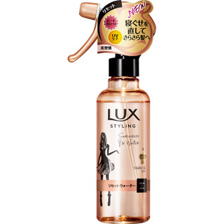

返回列表
产品名称：ラックス 美容液スタイリング リセットウォーター

ユニリーバ・ジャパン ラックス 美容液スタイリング リセットウォーター １９０ｍｌ
メーカー ユニリーバ・ジャパン
JANコード 4902111736815
商品の特徴
寝ぐせを直してさらさら髪へ
ヒートプロテクト
UVケア
美髪力
うるおい＆ツヤ
成分・分量
水、エタノール、PEG/PPG-20/22ブチルエーテルジメチコン、ジグリセリン、
ステアルトリモニウムクロリド、メトキシケイヒ酸エチルヘキシル、メドウフォーム-δ-ラクトン、イソプロパノール、香料、
用法及び用量
髪から10～15cm程度離して、しっとりするくらいスプレーし、髪になじませる。